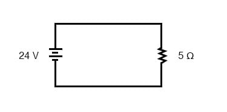
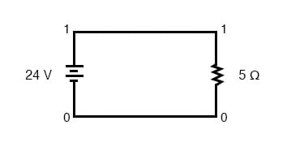
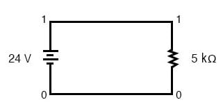

The SPICE circuit simulation computer program uses scientific notation to display its output information and can interpret both scientific notation and metric prefixes in the circuit description files. If you are going to be able to successfully interpret the SPICE analyses throughout this book, you must be able to understand the notation used to express variables of voltage, current, etc. in the program.
Let’s start with a very simple circuit composed of one voltage source (a battery) and one resistor:

To simulate this circuit using SPICE, we first have to designate node numbers for all the distinct points in the circuit, then list the components along with their respective node numbers so the computer knows which component is connected to which, and how. For a circuit of this simplicity, the use of SPICE seems like overkill, but it serves the purpose of demonstrating the practical use of scientific notation:

Typing out a circuit description file, or netlist, for this circuit, we get this:
simple circuit v1 1 0 dc 24 r1 1 0 5 .end
The line “v1 1 0 dc 24” describes the battery, positioned between nodes 1 and 0, with a DC voltage of 24 volts. The line “r1 1 0 5” describes the 5 Ω resistor placed between nodes 1 and 0.
Using a computer to run a SPICE analysis on this circuit description file, we get the following results:
node voltage ( 1) 24.0000 voltage source currents name current v1 -4.800E+00 total power dissipation 1.15E+02 watts
SPICE tells us that the voltage “at” node number 1 (actually, this means the voltage between nodes 1 and 0, node 0 being the default reference point for all voltage measurements) is equal to 24 volts. The current through battery “v1” is displayed as -4.800E+00 amps. This is SPICE’s method of denoting scientific notation.
What it’s really saying is “-4.800 x 100 amps,” or simply -4.800 amps. The negative value for current here is due to a quirk in SPICE and does not indicate anything significant about the circuit itself. The “total power dissipation” is given to us as 1.15E+02 watts, which means “1.15 x 102 watts,” or 115 watts.
Let’s modify our example circuit so that it has a 5 kΩ (5 kilo-ohm, or 5,000 ohm) resistor instead of a 5 Ω resistor and see what happens.

Once again is our circuit description file, or “netlist:”
simple circuit v1 1 0 dc 24 r1 1 0 5k .end
The letter “k” following the number 5 on the resistor’s line tells SPICE that it is a figure of 5 kΩ, not 5 Ω. Let’s see what result we get when we run this through the computer:
node voltage ( 1) 24.0000 voltage source currents name current v1 -4.800E-03 total power dissipation 1.15E-01 watts
The battery voltage, of course, hasn’t changed since the first simulation: its still at 24 volts. The circuit current, on the other hand, is much less this time because we’ve made the resistor a larger value, making it more difficult for electrons to flow. SPICE tells us that the current this time is equal to -4.800E-03 amps, or -4.800 x 10-3 amps. This is equivalent to taking the number -4.8 and skipping the decimal point three places to the left.
Of course, if we recognize that 10-3 is the same as the metric prefix “milli,” we could write the figure as -4.8 milliamps, or -4.8 mA.
Looking at the “total power dissipation” given to us by SPICE on this second simulation, we see that it is 1.15E-01 watts, or 1.15 x 10-1 watts. The power of -1 corresponds to the metric prefix “deci,” but generally we limit our use of metric prefixes in electronics to those associated with powers of ten that are multiples of three (ten to the power of . . . -12, -9, -6, -3, 3, 6, 9, 12, etc.).
So, if we want to follow this convention, we must express this power dissipation figure as 0.115 watts or 115 milliwatts (115 mW) rather than 1.15 deciwatts (1.15 dW).
Perhaps the easiest way to convert a figure from scientific notation to common metric prefixes is with a scientific calculator set to the “engineering” or “metric” display mode. Just set the calculator for that display mode, type any scientific notation figure into it using the proper keystrokes (see your owner’s manual), press the “equals” or “enter” key, and it should display the same figure in engineering/metric notation.
Again, I’ll be using SPICE as a method of demonstrating circuit concepts throughout this book. Consequently, it is in your best interest to understand scientific notation so you can easily comprehend its output data format.